11 gepinde screenshots, 5 schermrollen. Nederlands, Engels, Duits en Spaans zijn hier bronvarianten; de raster- en rapportschermen zijn geen elf onafhankelijke routes. Vergelijk eerst de begrotingsgeometrie en de aparte rapportsurface voordat een Rust-pixelclaim wordt gedaan.
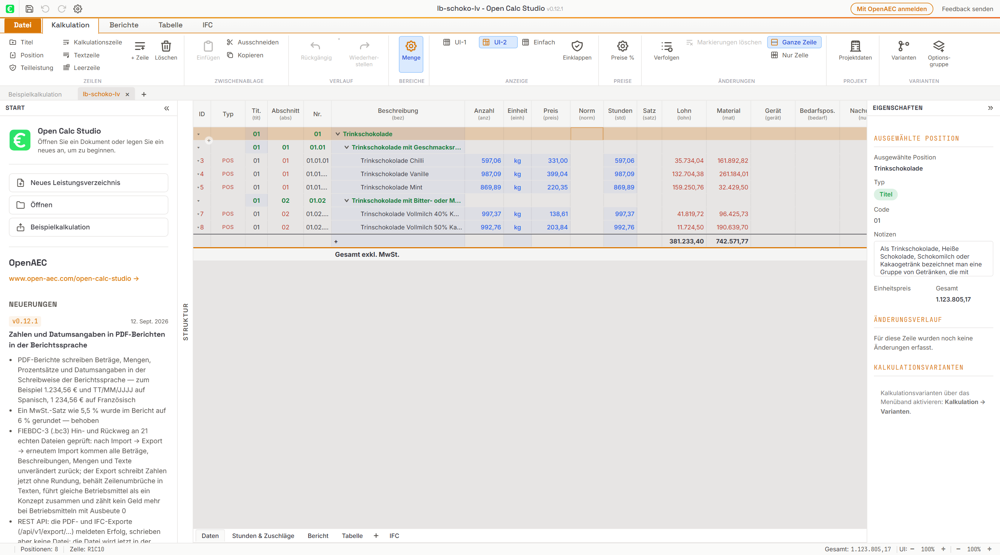
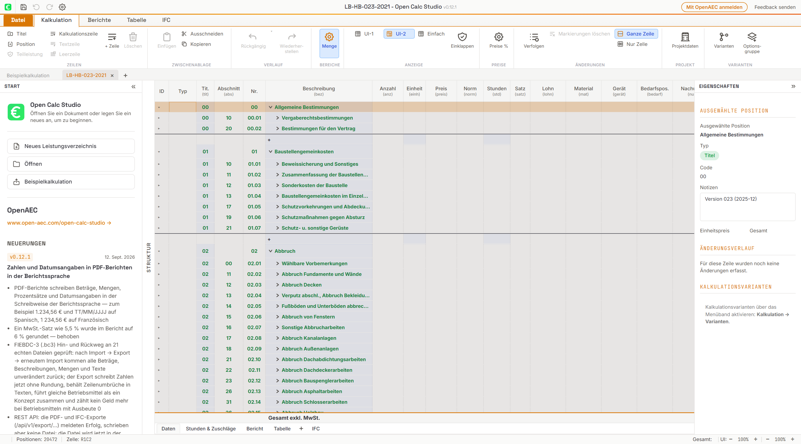
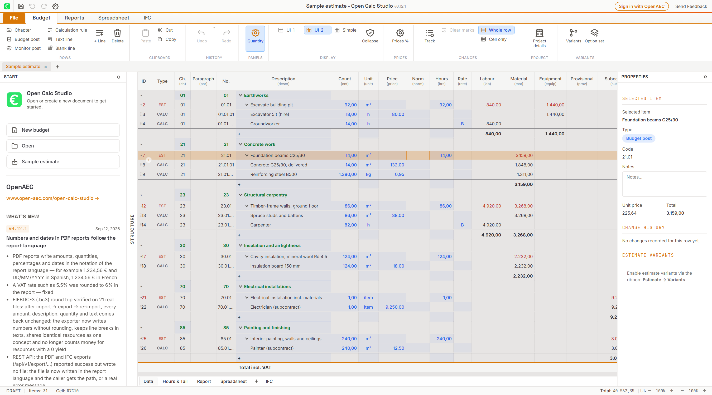
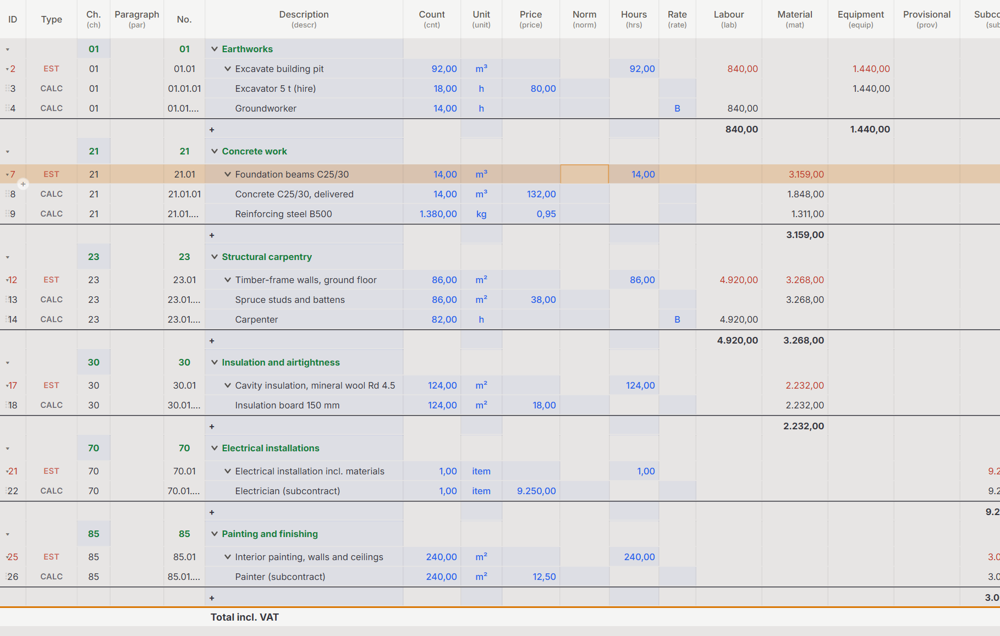
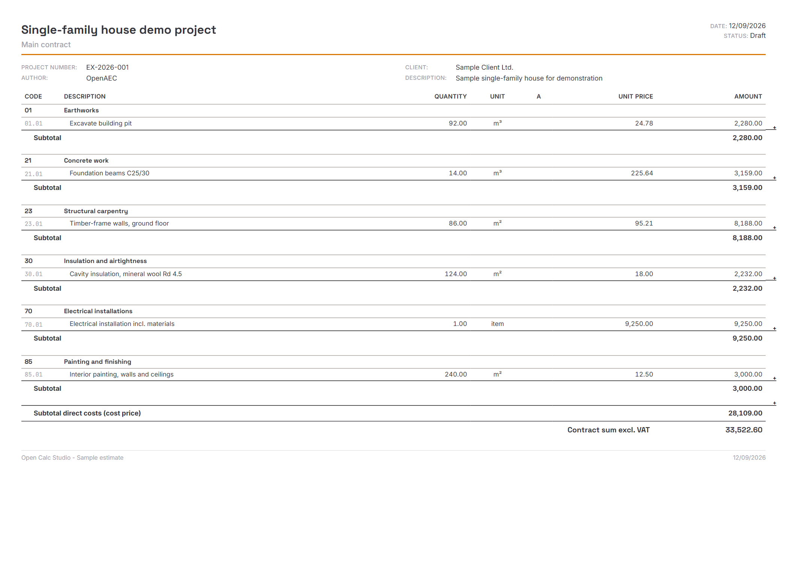
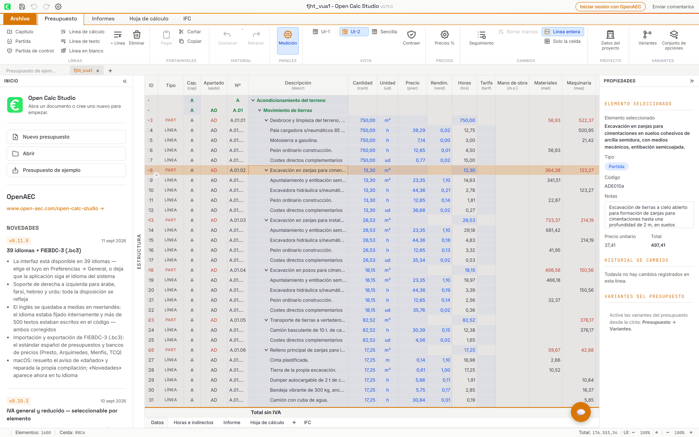
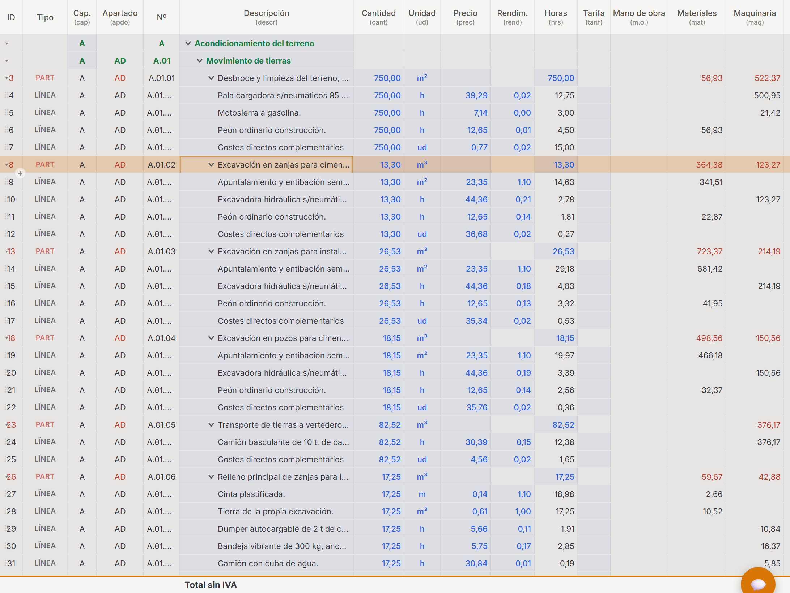
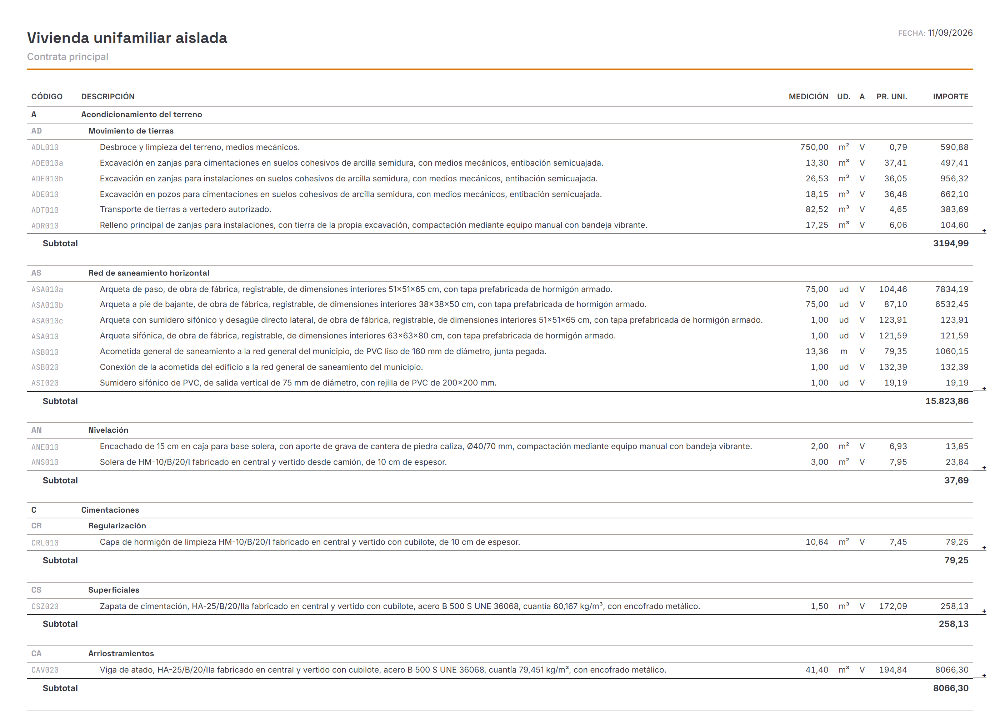
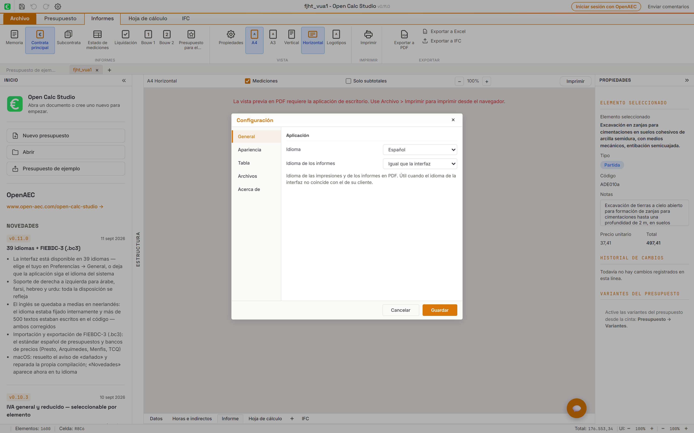
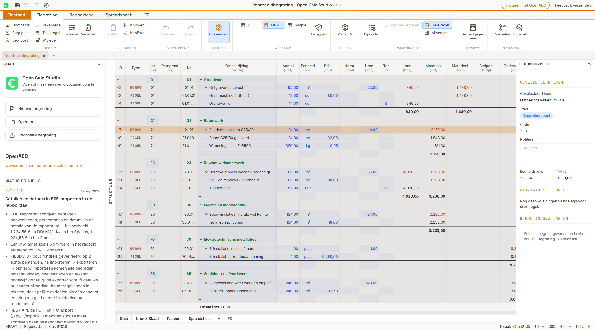
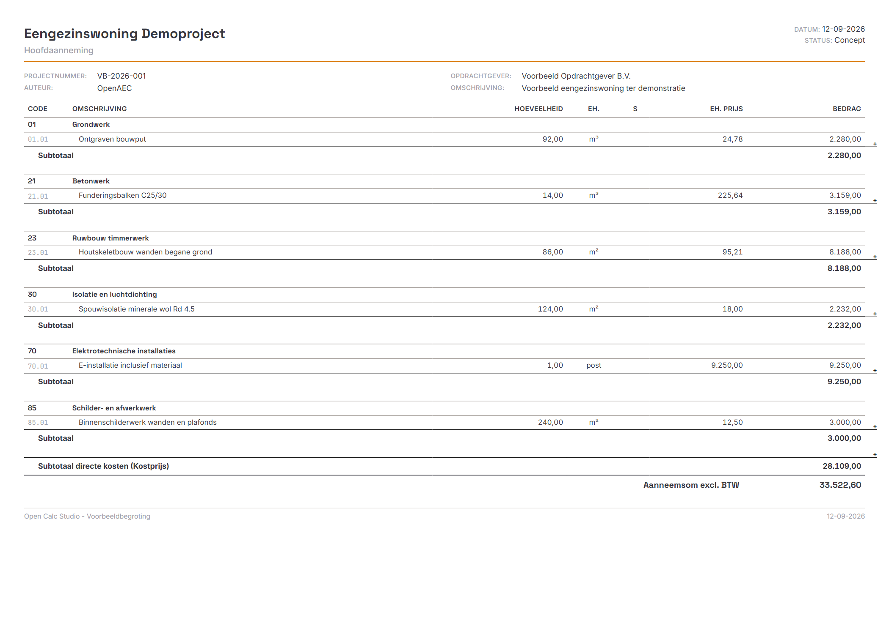
Titelbalk 32 px, linttabs 28 px, lintinhoud 94 px, status 22 px. De App.tsx-startmaten van de panelen zijn links 220 px en rechts 240 px. De 11 beelden tonen daarnaast eigen spreadsheet- en rapportinhoud.
Manifest met hashes en bronpaden